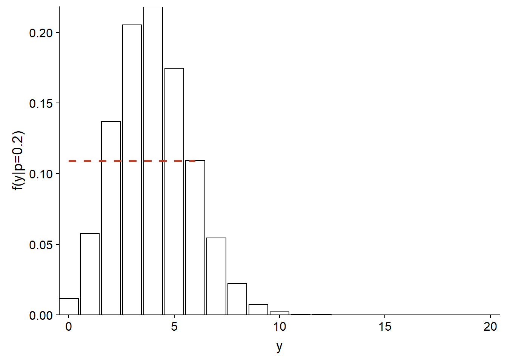
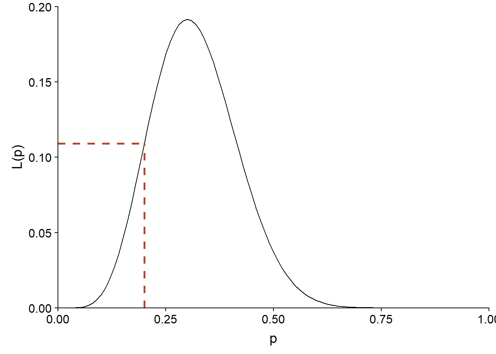
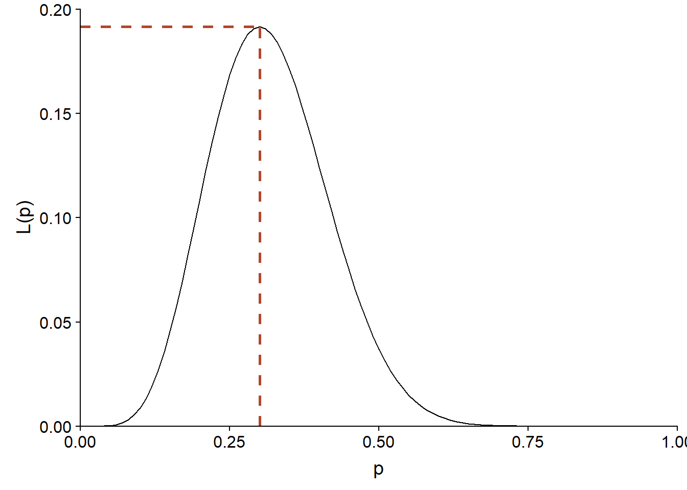
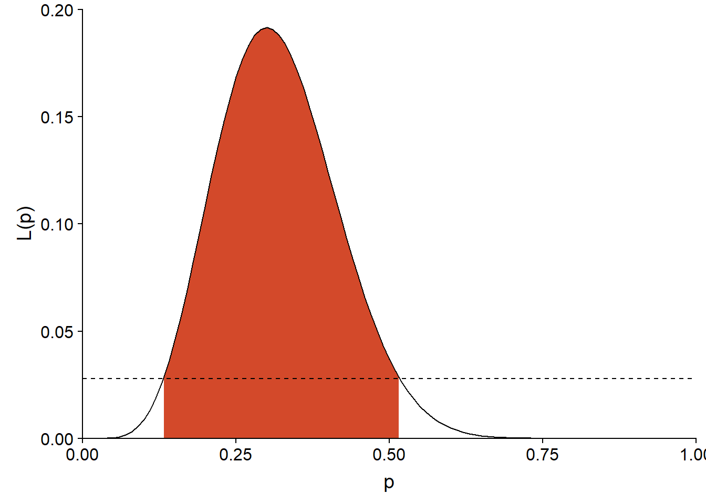
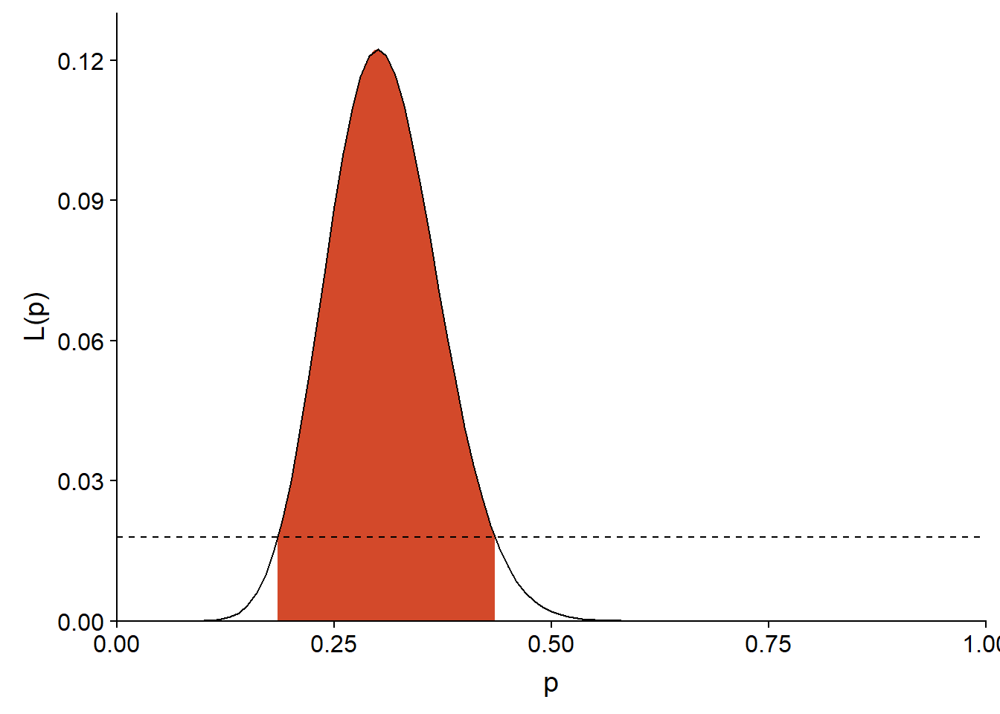
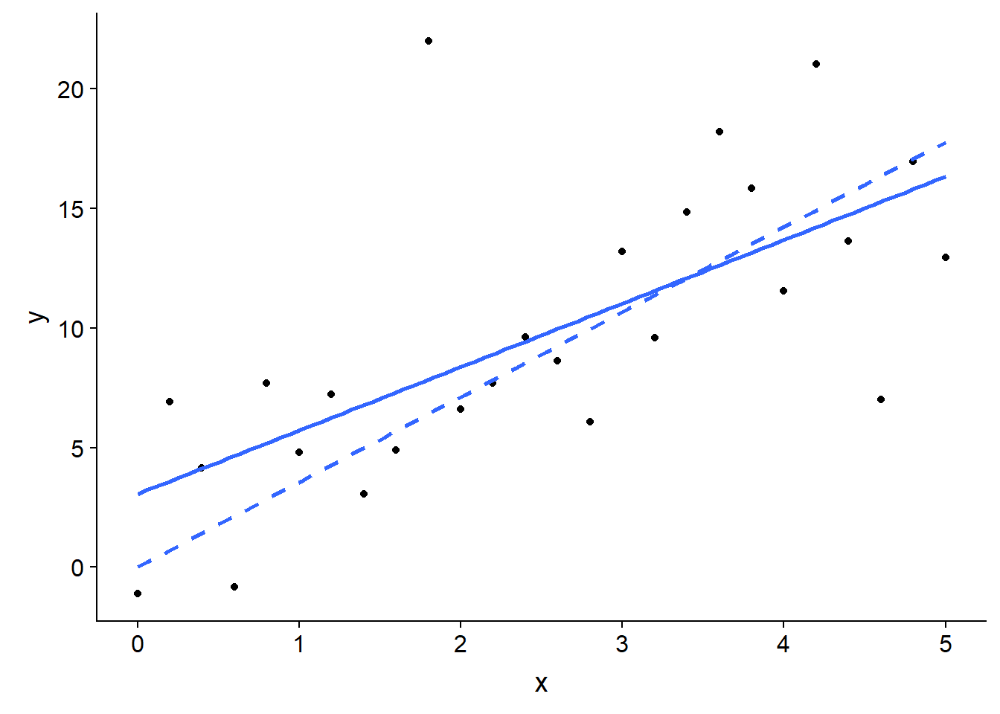

Maximum de vraisemblance
Introduction
Le maximum de vraisemblance est une méthode générale pour estimer les paramètres d’un modèle statistique. Par exemple, supposons que nous avons une série d’observations d’une variable aléatoire \(y\) et un modèle statistique potentiel pour cette variable. Ce modèle peut inclure la dépendance de \(y\) sur d’autres variables prédictrices, ainsi qu’une distribution statistique pour la portion non-expliquée de la variation de \(y\). En général, un tel modèle contient différents paramètres inconnus qui doivent être ajustés aux données observées.
Selon le maximum de vraisemblance, les meilleurs estimés des paramètres d’un modèle sont ceux qui maximisent la probabilité des valeurs observées de la variable. Cette méthode peut être appliquée peu importe la forme mathématique du modèle, ce qui permet de choisir les modèles les plus compatibles avec notre compréhension des processus naturels, sans être limités par les modèles déjà implémentés dans des logiciels statistiques. (Les méthodes bayésiennes que nous verrons plus tard dans le cours ont aussi cette versatilité.)
Si la méthode générale du maximum de vraisemblance n’a pas été présenté dans le cours préalable à celui-ci (ECL7102), certaines des méthodes vues dans ce cours étaient basées sur ce principe:
La sélection de modèles au moyen de l’AIC est basée sur la fonction de vraisemblance.
L’estimation des paramètres des modèles linéaires généralisés est effectuée en maximisant la vraisemblance.
L’estimation des paramètres des modèles linéaires mixtes utilise une version modifiée du maximum de vraisemblance (le maximum de vraisemblance restreint ou REML).
Contenu du cours
Principe du maximum de vraisemblance
Application du maximum de vraisemblance dans R
Test du rapport de vraisemblance
Calcul des intervalles de confiance
Estimation de plusieurs paramètres: vraisemblance profilée et approximation linéaire
Principe du maximum de vraisemblance
Fonction de vraisemblance
Supposons que nous souhaitons estimer le taux de germination d’un lot de semences en faisant germer 20 de ces semences dans les mêmes conditions. Si la variable \(y\) représente le nombre de semences ayant germé avec succès pour une réalisation de l’expérience, alors \(y\) suit une distribution binomiale:
\[f(y \vert p) = {n \choose y} p^y (1-p)^{n-y} \]
où le nombre d’essais \(n = 20\), \(p\) est la probabilité de germination pour la population et \({n \choose y}\) représente le nombre de façons de choisir \(y\) individus parmi \(n\). Nous écrivons \(f(y \vert p)\) pour préciser que cette distribution de \(y\) est conditionnelle à une certaine valeur de \(p\).
Par exemple, voici la distribution de \(y\) si \(p = 0.2\). La probabilité d’obtenir \(y = 6\) dans ce cas est d’environ 0.11 (ligne pointillée sur le graphique).
ggplot(data.frame(x = 0:20), aes(x)) +
labs(x = "y", y = "f(y|p=0.2)") +
stat_function(fun = dbinom, n = 21, args = list(size = 20, prob = 0.2),
geom = "bar", color = "black", fill = "white") +
geom_segment(aes(x = 0, xend = 6, y = dbinom(6, 20, 0.2),
yend = dbinom(6, 20, 0.2)),
color = "#b3452c", linetype = "dashed", size = 1) +
scale_x_continuous(expand = c(0, 0)) +
scale_y_continuous(expand = c(0, 0))
Si nous avons observé \(y = 6\), mais que nous ne connaissons pas \(p\), la même équation nous permet de calculer la probabilité d’avoir obtenu ce \(y\) pour chaque valeur possible de \(p\). Vue comme une fonction de \(p\), plutôt que \(y\), cette même équation correspond à la fonction de vraisemblance (dénotée \(L\), pour likelihood) de \(p\).
\[L(p) = f(y \vert p) = {n \choose y} p^y (1-p)^{n-y}\]
Voici la forme de \(L(p)\) pour \(y = 6\) et \(n = 20\):
ggplot(NULL) +
labs(x = "p", y = "L(p)") +
stat_function(fun = function(x) dbinom(6, 20, prob = x),
geom = "density") +
geom_segment(aes(x = 0, xend = 0.2, y = dbinom(6, 20, 0.2),
yend = dbinom(6, 20, 0.2)),
color = "#b3452c", linetype = "dashed", size = 1) +
geom_segment(aes(x = 0.2, xend = 0.2, y = 0, yend = dbinom(6, 20, 0.2)),
color = "#b3452c", linetype = "dashed", size = 1) +
scale_x_continuous(limits = c(0, 1), expand = c(0, 0)) +
scale_y_continuous(limits = c(0, 0.2), expand = c(0, 0))
La vraisemblance de \(p = 0.2\) pour cette observation de \(y\) est donc également de 0.11. Notons que \(f(y \vert p)\) était une distribution discrète, mais puisque \(p\) est un paramètre continu, la vraisemblance \(L(p)\) est définie pour toutes les valeurs réelles entre 0 et 1.
De façon plus générale, supposons que \(y = (y_1, y_2, ..., y_n)\) est un vecteur d’observations et \(\theta = (\theta_1, ..., \theta_m)\) est un vecteur des paramètres ajustables du modèle proposé pour expliquer ces observations. Dans ce cas, la vraisemblance d’un vecteur spécifique de valeurs pour \(\theta\) correspond à la probabilité conjointe des observations de \(y\), conditionnellement à ces valeurs de \(\theta\). Nous verrons un exemple spécifique du calcul de \(L\) pour un modèle à plusieurs paramètres (distribution normale) dans la prochaine section.
\[L(\theta) = p(y | \theta)\]
Note: Même si la valeur de \(L(\theta)\) pour un \(\theta\) donné correspond à une probabilité, la fonction de vraisemblance n’est pas une distribution de probabilité, car dans la théorie vue ici, \(\theta\) n’est pas une variable aléatoire. Aussi, l’intégrale d’une fonction de vraisemblance (aire sous la courbe de \(L(\theta)\) vs. \(\theta\)) n’est pas toujours égale à 1, contrairement à celle d’une densité de probabilité.
Maximum de vraisemblance
Selon le principe du maximum de vraisemblance, le meilleur estimé des paramètres du modèle selon nos observations \(y\) est le vecteur de valeurs \(\theta\) qui maximise la valeur de \(L(\theta)\).
Exemple: Distribution binomiale
Pour le modèle binomial présenté plus haut, il est possible de démontrer (voir le calcul dans le chapitre du livre de Bolker en référence) que l’estimé de \(p\) selon le maximum de vraisemblance est donné par:
\[\hat{p} = \frac{y}{n}\]
Autrement dit, la proportion de succès dans l’échantillon est le meilleur estimé de la probabilité de succès dans la population. Avec \(y = 6\) et \(n = 20\), on voit que le maximum de \(L(p)\) est obtenu pour \(p = 0.3\).
ggplot(NULL) +
labs(x = "p", y = "L(p)") +
stat_function(fun = function(x) dbinom(6, 20, prob = x),
geom = "density") +
geom_segment(aes(x = 0, xend = 0.3, y = dbinom(6, 20, 0.3),
yend = dbinom(6, 20, 0.3)),
color = "#b3452c", linetype = "dashed", size = 1) +
geom_segment(aes(x = 0.3, xend = 0.3, y = 0, yend = dbinom(6, 20, 0.3)),
color = "#b3452c", linetype = "dashed", size = 1) +
scale_x_continuous(limits = c(0, 1), expand = c(0, 0)) +
scale_y_continuous(limits = c(0, 0.2), expand = c(0, 0))
Exemple: Modèle linéaire
Dans le modèle de régression linéaire simple, la variable réponse \(y\) suit une distribution normale, avec une moyenne dépendant linéairement du prédicteur \(x\) et un écart-type constant \(\sigma\):
\[y \sim N(\beta_0 + \beta_1 x, \sigma)\]
Ce modèle comporte trois paramètres à estimer: \(\beta_0\), \(\beta_1\) et \(\sigma\). La densité de probabilité d’une observation de \(y\) correspond donc à:
\[f(y \vert \beta_0, \beta_1, \sigma) = \frac{1}{\sigma \sqrt{2 \pi}} e^{-\frac{1}{2} \left( \frac{y - \beta_0 - \beta_1 x}{\sigma} \right)^2}\]
Si nous réalisons \(n\) observations indépendantes de \(y\) (chacune avec la valeur du prédicteur \(x\)), leur densité de probabilité conjointe est donnée par le produit (noté \(\Pi\)) des densités de probabilité individuelles. Vue comme une fonction des paramètres, l’équation suivante donne donc la vraisemblance conjointe de \(\beta_0\), \(\beta_1\) et \(\sigma\):
\[L(\beta_0, \beta_1, \sigma) = f(y_1, ..., y_n \vert \beta_0, \beta_1, \sigma) = \prod_{i=1}^n \frac{1}{\sigma \sqrt{2 \pi}} e^{-\frac{1}{2} \left( \frac{y_i - \beta_0 - \beta_1 x_i}{\sigma} \right)^2}\]
Log-vraisemblance
En pratique, il est souvent plus facile de calculer la log-vraisemblance, soit \(l = \log L\). Puisque le logarithme est une fonction monotone – c’est-à-dire que si \(L\) augmente, \(\log L\) augmente aussi – alors la valeur des paramètres qui maximise \(l\) maximisera aussi \(L\).
Puisqu’un logarithme transforme un produit en somme:
\[ \log(xy) = \log(x) + \log(y)\]
la log-vraisemblance pour le problème de régression linéaire ci-dessus correspond à:
\[l(\beta_0, \beta_1, \sigma) = \sum_{i=1}^n \left( \log \left( \frac{1}{\sigma \sqrt{2 \pi}} \right) - \frac{1}{2} \left( \frac{y_i - \beta_0 - \beta_1 x_i}{\sigma} \right)^2 \right)\]
où en simplifiant un peu plus:
\[l(\beta_0, \beta_1, \sigma) = n \log \left( \frac{1}{\sigma \sqrt{2 \pi}} \right) - \frac{1}{2 \sigma^2} \sum_{i=1}^n \left( y_i - \beta_0 - \beta_1 x_i \right)^2\]
Notons que les coefficient \(\beta\) apparaissent seulement dans le deuxième terme de l’équation, qui contient la somme du carré des résidus du modèle. Plus ce terme diminue, plus \(l\) augmente, ce qui explique pourquoi les estimés des coefficients \(\beta\) par la méthode des moindres carrés sont les mêmes que ceux obtenus par le minimum de vraisemblance.
Pour des fonctions assez simples, la position du maximum peut être déterminée en trouvant la valeur de chaque paramètre où la dérivée de \(l\) en fonction de ce paramètre est 0. En particulier, pour la variance des résidus \(\sigma^2\), on obtient ainsi l’estimé suivant:
\[\hat{\sigma^2} = \frac{1}{n} \sum_{i=1}^n \left( y_i - \beta_0 - \beta_1 x_i \right)^2\]
Nous savons que cet estimateur de la variance est biaisé (pour un estimé non-biaisé, il faudrait \(n - 1\) au dénominateur). Le maximum de vraisemblance ne garantit pas une absence de biais, mais la théorie indique que ce biais devient négligeable pour un échantillon assez grand assez grand; dans cet exemple, la différence entre \(n-1\) et \(n\) devient moins importante quand \(n\) augmente.
Application du maximum de vraisemblance dans R
Exemple: Plantes des îles Galapagos
Le fichier galapagos.csv contient un jeu de données sur la richesse spécifique des plantes de 30 îles de l’archipel des Galapagos. (Source: Johnson, M.P. et Raven, P.H. 1973. Species number and endemism: The Galapagos Archipelago revisited. Science 179: 893–895.)
galap <- read.csv("../donnees/galapagos.csv")
str(galap)## 'data.frame': 30 obs. of 8 variables:
## $ Name : chr "Baltra" "Bartolome" "Caldwell" "Champion" ...
## $ Species : int 58 31 3 25 2 18 24 10 8 2 ...
## $ Endemics : int 23 21 3 9 1 11 0 7 4 2 ...
## $ Area : num 25.09 1.24 0.21 0.1 0.05 ...
## $ Elevation: int 346 109 114 46 77 119 93 168 71 112 ...
## $ Nearest : num 0.6 0.6 2.8 1.9 1.9 8 6 34.1 0.4 2.6 ...
## $ Scruz : num 0.6 26.3 58.7 47.4 1.9 ...
## $ Adjacent : num 1.84 572.33 0.78 0.18 903.82 ...Nous modéliserons ces données avec une distribution binomiale négative. Cette distribution est appropriée pour représenter les données de comptage dont la variance est supérieure à celle prévue par la distribution de Poisson.
Si une variable \(y\) suit une distribution de Poisson, alors sa moyenne et sa variance sont toutes deux données par un même paramètre \(\lambda\).
\[y \sim \textrm{Pois}(\lambda)\]
La distribution binomiale comprend deux paramètres, \(\mu\) et \(\theta\).
\[y \sim \textrm{NB}(\mu, \theta)\]
Dans ce modèle, \(y\) a une moyenne de \(\mu\) et une variance de \(\mu + \frac{\mu^2}{\theta}\). Le paramètre \(\theta\) est toujours positif. Une petite valeur de \(\theta\) représente une distribution plus variable, tandis que si \(\theta\) est très élevé, le deuxième terme est négligeable et la distribution tend vers celle de Poisson.
Comme pour la régression de Poisson, le modèle binomial négatif utilise un lien logarithmique pour relier \(\mu\) à une fonction linéaire des prédicteurs.
\[\log\mu = \beta_0 + \beta_1 x_1 + \beta_2 x_2 + ...\]
Pour cet exemple, nous ajusterons le modèle du nombre d’espèces (Species) en fonction de la superficie de l’île (Area, en km\(^2\)) et de la distance jusqu’à l’île la plus proche (Nearest, en km). Nous prenons aussi le logarithme de chaque prédicteur.
Utilisation du package bbmle
La plupart des modèles ne permettent pas de dériver analytiquement la position du maximum de vraisemblance. Dans ce cas, nous avons recours à des algorithmes d’optimisation qui estiment numériquement la valeur maximale de la fonction de (log-)vraisemblance et la valeur de chaque paramètre correspondant à ce maximum.
Dans R, la fonction optim est un outil général pour déterminer le minimum ou maximum d’une fonction donnée. Toutefois, il existe aussi des fonctions spécialisées au problème d’estimation par le maximum de vraisemblance: dans ce cours, nous utiliserons la fonction mle2 du package bbmle.
Tout d’abord, nous devons écrire une fonction qui calcule l’opposé de la log-vraisemblance (negative log-likelihood) pour notre problème. Par convention, les algorithmes d’optimisation demandent une fonction à minimiser, donc au lieu de maximiser la log-vraisemblance, on minimise son opposé.
nll_galap <- function(b_0, b_area, b_near, theta) {
mu_sp <- exp(b_0 + b_area * log(galap$Area) + b_near * log(galap$Nearest))
-sum(dnbinom(galap$Species, mu = mu_sp, size = theta, log = TRUE))
}La fonction nll_galap ci-dessus accepte quatre paramètres qui correspondent aux trois coefficients du prédicteur linéaire et au paramètre \(\theta\) de la distribution binomiale négative.
La première ligne de la fonction calcule le prédicteur linéaire et prend son exponentielle pour obtenir le nombre d’espèces moyen
mu_sp. Rappel: Dans R, la plupart des opérations mathématiques sont effectuées en parallèle sur les vecteurs. Ainsi,mu_spcontient 30 valeurs, la première calculée à partir des valeurs des prédicteurs pour l’île 1, la deuxième pour les valeurs de l’île 2, etc.La deuxième ligne calcule la log-vraisemblance de chaque observation selon le modèle binomial avec
dnbinom(aussi en parallèle), puis fait leur somme et prend l’opposé.
Notez que nous spécifions log = TRUE dans dnbinom pour calculer le logarithme de la vraisemblance. Tel que vu précédemment, la log-vraisemblance d’un ensemble d’observations est égale à la somme de leurs log-vraisemblances individuelles tant que les observations sont indépendantes.
Finalement, nous chargeons le package bbmle et nous appelons la fonction mle2. Le premier argument de cette fonction est notre fonction calculant l’opposé de la log-vraisemblance. Nous devons aussi spécifier pour l’argument start une liste des valeurs initiales de chaque paramètre, que l’algorithme utilisera pour commencer la recherche du maximum.
Le choix exact des valeurs initiales importe peu dans la plupart des cas, mais il est recommandé de donner des valeurs plausibles (pas trop extrêmes) des paramètres. Nous choisissons donc une valeur nulle pour chaque coefficient, mais une valeur positive pour \(\theta\) qui doit être supérieur à zéro.
library(bbmle)
mle_galap <- mle2(nll_galap, start = list(b_0 = 0, b_area = 0, b_near = 0, theta = 1))
mle_galap##
## Call:
## mle2(minuslogl = nll_galap, start = list(b_0 = 0, b_area = 0,
## b_near = 0, theta = 1))
##
## Coefficients:
## b_0 b_area b_near theta
## 3.3352151 0.3544290 -0.1042696 2.7144722
##
## Log-likelihood: -137.98L’exécution de la fonction produit plusieurs avertissements (warnings) dans R, qui ne sont pas montrés ici. Ceux-ci résultent probablement de cas où l’algorithme tente d’assigner une valeur négative à theta et produit une erreur. Dans ce cas il tente simplement une nouvelle valeur.
Inteprétation de la vraisemblance
Remarquez que le maximum de la log-vraisemblance dans le résultat ci-dessus est égal à -137.98, ce qui correspond à une valeur infime de la vraisemblance:
exp(-137.98)## [1] 1.191372e-60La vraisemblance correspond à la probabilité d’obtenir exactement les valeurs apparaissant dans le jeu de données, selon le modèle. Considérant les nombreuses valeurs possibles pour une observation de la variable et le fait que ces possibilités se multiplient pour chaque observation subséquente, il n’est pas suprenant que cette probabilité soit très faible et d’autant plus faible pour un grand échantillon.
La valeur absolue de la vraisemblance n’est pas vraiment interprétable. C’est plutôt sa valeur relative qui permet de comparer l’ajustement de plusieurs valeurs des paramètres appliqués en fonction des mêmes données observées.
Néanmoins, il est difficile de travailler avec des nombres extrêmement proches de zéro; c’est une des raisons pour lesquelles le logarithme de la vraisemblance est utilisé en pratique.
Quand utiliser le maximum de vraisemblance?
Pour notre exemple, nous aurions pu utiliser la fonction glm.nb du package MASS, conçue spécialement pour estimer les paramètres d’une régression binomiale négative. En ajustant notre modèle avec cette fonction, nous pouvons vérifier que les résultats concordent avec l’application de mle2.
library(MASS)
glm.nb(Species ~ log(Area) + log(Nearest), galap)##
## Call: glm.nb(formula = Species ~ log(Area) + log(Nearest), data = galap,
## init.theta = 2.714482206, link = log)
##
## Coefficients:
## (Intercept) log(Area) log(Nearest)
## 3.3352 0.3544 -0.1043
##
## Degrees of Freedom: 29 Total (i.e. Null); 27 Residual
## Null Deviance: 138.7
## Residual Deviance: 32.7 AIC: 284Les fonctions disponibles dans R et différents packages couvrent déjà un bon nombre de modèles courants, incluant les modèles linéaires, linéaires généralisés, mixtes et autres. Aussi, plusieurs modèles qui n’apparaissent pas linéaires peuvent être linéarisés avec une transformation appropriée. Par exemple, une loi de puissance entre le nombre d’espèces \(S\) et la surperficie d’habitat \(A\):
\[S = cA^z\]
peut être transformée en relation linéaire en prenant le logarithme de chaque côté:
\[\log(S) = \log(c) + z \log(A)\]
Lorsqu’une fonction spécialisée est disponible pour estimer les paramètres d’un modèle, il est plus simple d’utiliser celle-ci plutôt que de coder le modèle soi-même et d’appliquer le maximum de vraisemblance.
Toutefois, il existe des cas où le modèle présumé pour les données ne cadre pas dans un format standard. Voici quelques exemples en écologie forestière.
Ajustement d’une courbe de dispersion (ex.: Clark et al. 1999)
Une façon d’estimer la capacité de dispersion d’une espèce de plantes est d’échantillonner les graines tombant dans des pièges placés à différentes distances de plantes mères. En particulier, on s’intéresse à estimer la courbe de dispersion \(f(r)\) qui correspond à la probabilité qu’une graine tombe à une distance \(r\) de son point d’origine.
Supposons que \(y\) représente le nombre de graines dans un des pièges et peut être représenté par une distribution binomiale négative.
\[y_i \sim \textrm{NB}(\mu_i, \theta)\]
Le nombre de graines moyen dans le piège \(i\), \(\mu_i\), correspond à la somme des contributions de chaque plante mère \(j\) située à proximité; cette contribution est égale au nombre de graines produites par une plante mère (\(b\), que nous supposons fixe) multiplié par la courbe de dispersion évaluée pour la distance \(r_{ij}\) entre le piège \(i\) et la plante \(j\).
\[y_i \sim \textrm{NB}(\sum_j b\times f(r_{ij}), \theta)\]
Puisque \(f\) est une fonction non-linéaire avec ses propres paramètres à ajuster, puis que la moyenne de \(y\) contient la somme de valeurs de \(f\) évaluées à différentes distances, il est nécessaire de créer sa propre fonction de vraisemblance et la maximiser avec un outil comme mle2.
Estimation de la fonction de compétition du voisinage (ex.: Canham et al. 2004)
La croissance d’arbres dans une forêt peut être réduite par la compétition provenant de leurs voisins. Si on suppose que la compétition exercée sur un arbre \(i\) par un voisin \(j\) augmente avec le diamètre \(D_j\) de ce voisin et diminue avec la distance \(r_{ij}\) entre les deux arbres, nous pouvons définir un indice de compétition (CI) faisant la somme des effets de chaque voisin sur \(i\):
\[CI_i = \sum_j \frac{D_j^{\delta}}{r_{ij}^{\gamma}}\]
Nous souhaitons estimer les puissances \(\delta\) et \(\gamma\) apparaissant dans l’indice à partir des données. Supposons que nous avons un modèle linéaire de la croissance \(y_i\) de l’arbre \(i\) auquel nous ajoutons un terme dépendant de cet indice:
\[y_i = \beta_0 + ... + \beta_{CI} \sum_j \frac{D_j^{\delta}}{r_{ij}^{\gamma}}\]
Il n’y a pas moyen de simplifier ce dernier terme, donc le maximum de vraisemblance peut être utile pour estimer les coefficients (tous les \(\beta\), \(\gamma\) et \(\delta\)) de ce modèle maintenant non-linéaire.
Limites du maximum de vraisemblance
La plupart des propriétés avantageuses des estimés du maximum de vraisemblance, dont l’absence de biais, sont valides dans la limite où la taille de l’échantillon est grand. Ce qui constitue un échantillon assez grand dépend du modèle et en particulier du nombre de paramètres à estimer.
En pratique, le maximum de vraisemblance est obtenu par un algorithme numérique recherchant le maximum par un processus itératif. Une fonction de vraisemblance complexe pourrait avoir plusieurs maximums locaux (des points où la fonction est maximisée par rapport aux valeurs proches des paramètres), dans lequel cas il n’est pas garanti que l’algorithme trouve le maximum global (celui avec la vraisemblance la plus élevée).
Test du rapport de vraisemblance
Test sur la valeur d’un paramètre
Il est possible d’utiliser la fonction de vraisemblance pour tester une hypothèse sur la valeur d’un paramètre.
Par exemple, considérons la fonction de vraisemblance calculée au début du cours pour estimer la probabilité de germination d’un lot de semences, si 6 semences ont germé sur 20 essais.
ggplot(NULL) +
labs(x = "p", y = "L(p)") +
stat_function(fun = function(x) dbinom(6, 20, prob = x),
geom = "density") +
scale_x_continuous(limits = c(0, 1), expand = c(0, 0)) +
scale_y_continuous(limits = c(0, 0.2), expand = c(0, 0))
Dans ce cas, l’estimé du maximum de vraisemblance est \(\hat{p} = 0.3\). Supposons que le fournisseur des semences affirme que leur taux de germination est de 50%. Est-ce que le résultat de l’expérience est compatible avec cette valeur?
La vraisemblance correspondant à l’hypothèse nulle (\(p_0 = 0.5\)) est d’environ \(L(p_0) = 0.037\), comparativement à un maximum de \(L(\hat{p}) = 0.192\).
l_0 <- dbinom(6, 20, prob = 0.5)
l_max <- dbinom(6, 20, prob = 0.3)
c(l_0, l_max)## [1] 0.03696442 0.19163898Le rapport entre ces deux valeurs de \(L\) sert à définir une statistique pour le test du rapport de vraisemblance (likelihood-ratio test). Cette statistique correspond à -2 fois le logarithme du rapport entre la vraisemblance du paramètre sous l’hypothèse nulle et le maximum de vraisemblance estimé.
\[- 2 \log \left( \frac{L(\theta_0)}{L(\hat{\theta})} \right)\]
De façon équivalente, on peut remplacer le rapport par la différence des log-vraisemblances:
\[- 2 \left( l(\theta_0) - l(\hat{\theta}) \right)\]
Le facteur -2 a été choisi pour que, si l’hypothèse nulle est vraie et que l’échantillon est assez grand, la distribution de cette statistique s’approche de la distribution du \(\chi^2\) avec 1 degré de liberté.
Dans notre exemple, la statistique du rapport de vraisemblance est égale à 3.29.
rv <- -2*log(l_0 / l_max)
rv## [1] 3.291315La probabilité d’obtenir un rapport plus grand ou égal à celui-ci, si l’hypothèse nulle \(p = 0.5\) est vraie, peut être approximée avec la distribution cumulative du \(\chi^2\).
1 - pchisq(rv, df = 1)## [1] 0.06964722Note: Le test du rapport de vraisemblance ne s’applique pas si l’hypothèse nulle se trouve à la limite des valeurs possibles pour un paramètre. Par exemple, pour le paramètre \(p\) d’une distribution binomiale, nous ne pouvons pas utiliser ce test pour l’hypothèse nulle \(p_0 = 0\) ou \(p_0 = 1\).
Comparaison de modèles
Le test du rapport de vraisemblance est aussi utilisé pour comparer deux modèles. Dans ce cas, il faut que les modèles soient nichés, c’est-à-dire que le modèle plus simple contienne un sous-ensemble des paramètres du modèle plus complexe. Par exemple, supposons un modèle de régression linéaire avec 1 prédicteur et un deuxième avec 3 prédicteurs.
- M1: \(y = \beta_0 + \beta_1 x_1 + \epsilon\)
- M2: \(y = \beta_0 + \beta_1 x_1 + \beta_2 x_2 + \beta_3 x_3 + \epsilon\)
Dans ce cas, M1 peut être vu comme une version de M2 où \(\beta_2\) et \(\beta_3\) sont fixés à 0. Si M1 est le vrai modèle pour les données, la statistique du rapport de vraisemblance entre les deux modèles suit approximativement une distribution du \(\chi^2\), avec un nombre de degrés de liberté égal à la différence du nombre de paramètres estimés entre les deux modèles (ici, 2).
\[- 2 \left( l_{M1} - l_{M2} \right) \sim \chi^2(2)\]
Dans le cours ECL7102, nous avons étudié la comparaison de modèles avec le critère d’information d’Akaike (AIC):
\[AIC = - 2 \log L + 2K = -2l + 2K\]
Dans cette formule, \(K\) est le nombre de paramètres ajustables du modèle. Nous avons aussi vu une correction à l’AIC (AICc) pour les “petits” échantillons (lorsque \(N/K\) < 30, où \(N\) est la taille de l’échantillon).
L’AIC a une portée plus large que le test du rapport de vraisemblance, car on peut comparer plus de deux modèles, qu’ils soient nichés ou non. Lorsque les deux méthodes s’appliquent, leurs objectifs sont différents:
l’AIC vise à identifier le modèle qui prédirait le mieux la réponse pour un nouvel échantillon de la même population;
le test du rapport de vraisemblance indique si l’écart observé entre l’ajustement du modèle le plus simple et le modèle le plus complexe est compatible avec l’hypothèse que le modèle le plus simple soit correct.
Calcul des intervalles de confiance
Si \(\hat{\theta}\) est l’estimé du maximum de vraisemblance pour un paramètre \(\theta\), nous pouvons obtenir un intervalle de confiance pour ce paramètre en utilisant la relation entre test d’hypothèse et intervalle de confiance:
Si on ne peut pas rejeter l’hypothèse nulle \(\theta = \theta_0\) avec un seuil de signification \(\alpha\), alors \(\theta_0\) fait partie de l’intervalle de confiance à \(100(1-\alpha)\%\) pour \(\theta\).
Par exemple, les limites de l’intervalle de confiance à 95% sont les valeurs de \(\theta\) où la statistique du rapport de vraisemblance est égale au 95e centile de la distribution du \(\chi^2\); il s’agit de la valeur maximale de la statistique qui n’est pas rejetée à un seuil \(\alpha = 0.05\).
\[- 2 \left( l(\theta_0) - l(\hat{\theta}) \right) = \chi^2_{0.95}(1)\]
Rappel: Le test du \(\chi^2\) est unilatéral, car seules les valeurs élevées de la statistique indiquent un écart significatif avec l’hypothèse nulle.
En isolant \(\theta_0\) dans l’équation, on obtient:
\[l(\theta_0) = l(\hat{\theta}) - \frac{\chi^2_{0.95}(1)}{2}\]
Il s’agit donc de déterminer les valeurs de \(\theta\) pour lequelles la log-vraisemblance est environ 1.92 inférieure au maximum.
qchisq(0.95, df = 1) / 2## [1] 1.920729Exemple
Pour notre exemple de germination de semences (\(\hat{p} = 0.3\)), les limites de l’intervalle à 95% correspondent à \(L = 0.0281\).
exp(dbinom(6, 20, 0.3, log = TRUE) - qchisq(0.95, df = 1)/2)## [1] 0.02807512Ce seuil est représenté par la ligne pointillée sur le graphique ci-dessous et correspond à un intervalle approximatif de (0.132, 0.516) pour \(p\).
ggplot(NULL) +
labs(x = "p", y = "L(p)") +
stat_function(geom = "area", fill = "#d3492a", n = 1000,
fun = function(x) ifelse(x > 0.132 & x < 0.516,
dbinom(6, 20, prob = x), NA)) +
stat_function(fun = function(x) dbinom(6, 20, prob = x),
geom = "density") +
geom_hline(yintercept = 0.0279, linetype = "dashed") +
scale_x_continuous(limits = c(0, 1), expand = c(0, 0)) +
scale_y_continuous(limits = c(0, 0.2), expand = c(0, 0))
Pour une expérience avec le même estimé de \(\hat{p}\), mais un plus grand échantillon \((n = 50, y = 15)\), la limite de \(L\) pour l’intervalle à 95% est de 0.0179.
exp(dbinom(15, 50, 0.3, log = TRUE) - qchisq(0.95, df = 1)/2)## [1] 0.01792382Comme on le voit ci-dessous, la fonction de vraisemblance et donc l’intervalle de confiance sont plus étroits.
ggplot(NULL) +
labs(x = "p", y = "L(p)") +
stat_function(geom = "area", fill = "#d3492a", n = 1000,
fun = function(x) ifelse(x > 0.185 & x < 0.435,
dbinom(15, 50, prob = x), NA)) +
stat_function(fun = function(x) dbinom(15, 50, prob = x),
geom = "density") +
geom_hline(yintercept = 0.0179, linetype = "dashed") +
scale_x_continuous(limits = c(0, 1), expand = c(0, 0)) +
scale_y_continuous(breaks = seq(0, 0.12, 0.03),
limits = c(0, 0.13), expand = c(0, 0))
Vraisemblance profilée
Si \(m\) paramètres sont estimés en même temps, la fonction de vraisemblance n’est pas une courbe, mais plutôt une surface en \(m\) dimensions. Lorsqu’on calcule le rapport de vraisemblance \(- 2 \left( l(\theta_{0}) - l(\hat{\theta}) \right)\) pour différentes valeurs \(\theta_{0}\) d’un des paramètres, il faut donc choisir quelle valeur donner aux autres \(m - 1\) paramètres. Une solution simple serait de fixer tous les autres paramètres à leur valeur estimée au maximum de vraisemblance, mais cela suppose que ces estimés sont indépendants. En général, si on fixe \(\theta_0\) à une valeur autre que \(\hat{\theta}\), l’estimé maximisant la vraisemblance peut changer.
Par exemple, dans le modèle de régression linéaire illustré ci-dessous, le meilleur estimé de la pente change si on fixe l’ordonnée à l’origine à 0 (ligne pointillée).
## `geom_smooth()` using formula 'y ~ x'
Afin de construire la courbe de \(l(\theta_0)\) pour différentes valeurs du paramètre, il faut donc pour chaque valeur fixe de \(\theta_0\) trouver la maximum de vraisemblance pour le reste des paramètres. La courbe résultante se nomme la vraisemblance profilée (profile likelihood).
La fonction profile du package bbmle évalue la vraisemblance profilée de chaque paramètre à partir du résultat de mle2. Voici le résultat obtenu pour le modèle ajusté plus tôt (régression binomiale négative du nombre d’espèces de plantes des îles Galapagos).
galap_pro <- profile(mle_galap)
plot(galap_pro)
Pour chaque paramètre, le graphique montre la racine carrée du rapport de vraisemblance \(\sqrt{- 2 \left( l(\theta_{0}) - l(\hat{\theta}) \right)}\) pour la vraisemblance profilée. La transformation racine carrée permet de voir rapidement si la log-vraisemblance profilée est approximativement quadratique (voir section suivante), ce qui résulterait en un “V” symétrique après transformation.
Différents intervalles de confiance sont superposés au graphique; on peut aussi obtenir directement ces intervalles avec la fonction confint.
confint(galap_pro, level = 0.95)## 2.5 % 97.5 %
## b_0 3.0259619 3.66809720
## b_area 0.2837173 0.42822254
## b_near -0.2600032 0.05105544
## theta 1.5113578 4.69693757Approximation quadratique
Puisque le calcul de la vraisemblance profilée d’un paramètre requiert un ajustement répété des autres paramètres du modèle, cette méthode prend beaucoup de temps pour un modèle complexe.
Une méthode plus approximative, mais beaucoup plus rapide, est de supposer que la log-vraisemblance suit une forme quadratique. Avec un seul paramètre, cette forme quadratique est une parabole centrée sur le maximum de vraisemblance: \(- 2 \left( l(\theta_{0}) - l(\hat{\theta}) \right) = a (\theta_{0} - \hat{\theta})^2\). Ici, le coefficient \(a\) mesure la courbure de la parabole. Comme nous avons vu dans l’exemple binomial ci-dessus, plus cette courbure est prononcée, plus l’estimation du paramètre est précise.
En fait, si l’approximation quadratique est bonne, la variance de \(\hat{\theta}\) (donc le carré de son erreur-type) est l’inverse de la dérivée seconde de \(-l\), qui mesure la courbure au maximum.
\[\frac{\textrm{d}^2(-l)}{\textrm{d}\theta^2} = \frac{1}{\sigma_{\hat{\theta}}^2}\]
Avec \(m\) paramètres, la courbure en \(m\) dimensions autour du maximum est représentée par une matrice \(m \times m\) des dérivées partielles secondes de \(-l\), qu’on appelle la matrice d’information de Fisher. En inversant cette matrice, on obtient les variances et covariances des estimés. En supposant que l’approximation quadratique est juste, ces variances et covariances sont suffisantes pour obtenir les intervalles de confiance voulus de chaque paramètre.
Dans le package bbmle, on peut calculer les intervalles de confiance selon l’approximation quadratique en spécifiant method = "quad" dans la fonction confint:
confint(mle_galap, level = 0.95, method = "quad")## 2.5 % 97.5 %
## b_0 3.0246480 3.6457823
## b_area 0.2847479 0.4241100
## b_near -0.2536734 0.0451341
## theta 1.1781122 4.2508322On remarque ici que les estimés s’approchent de ceux de la vraisemblance profilée, sauf pour \(\theta\). En inspectant les profils obtenus plus haut, il est apparent que celui de \(\theta\) suit moins la forme quadratique.
Résumé
Pour un modèle statistique, la vraisemblance est une fonction qui associe à chaque valeur des paramètres la probabilité des données observées, conditionnelle à cette paramétrisation. Selon le principe du maximum de vraisemblance, le meilleur estimé des paramètres est celui qui maximise la vraisemblance.
Afin de déterminer le maximum de vraisemblance pour un modèle personnalisé dans R, il faut créer une fonction qui calcule la log-vraisemblance en fonction des paramètres, puis faire appel à un algorithme d’optimisation pour trouver le maximum.
Le test du rapport de vraisemblance permet de tester une hypothèse sur la valeur d’un paramètre estimé au moyen du maximum de vraisemblance, d’obtenir un intervalle de confiance pour ce paramètre, ou de comparer deux modèles nichés.
Pour estimer l’incertitude d’un estimé dans un modèle avec plusieurs paramètres ajustables, nous pouvons soit calculer la vraisemblance profilée pour ce paramètre, soit avoir recours à l’approximation quadratique.
Références
Bolker, B.M. (2008) Ecological models and data in R. Princeton University Press, Princeton, New Jersey. (Chapitre 6 sur le maximum de vraisemblance)
Canham, C.D., LePage, P.T. et Coates, K.D. (2004) A neighborhood analysis of canopy tree competition: effects of shading versus crowding. Canadian Journal of Forest Research 34: 778–787.
Clark, J.S., Silman, M., Kern, R., Macklin, E. et HilleRisLambers, J. (1999) Seed dispersal near and far: Patterns across temperate and tropical forests. Ecology 80: 1475–1494.